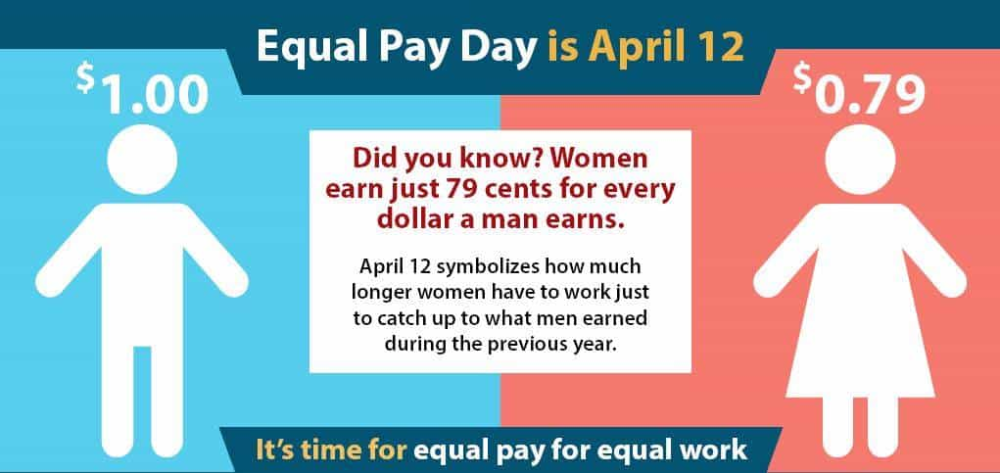
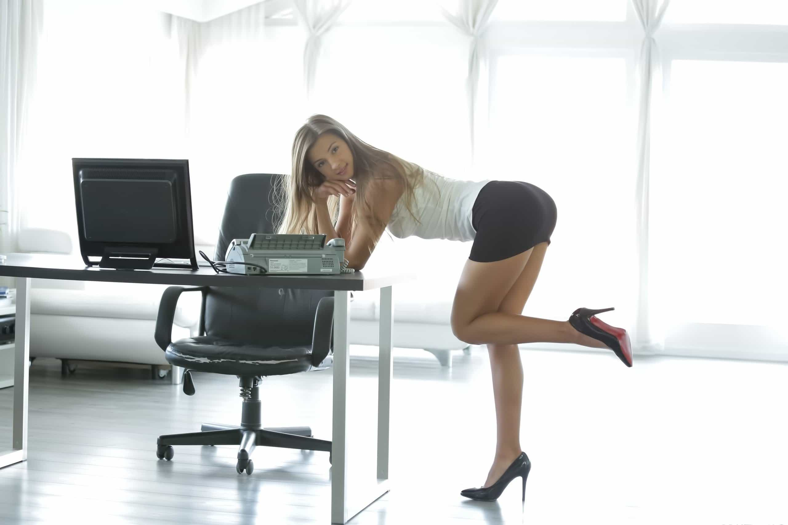

For the past decade plus, we’ve been told day after day about the alleged “wage gap”. One might think that an issue as serious and widespread would have multiple layers to it with facts and statistics to back up this claim.
Thing is, it’s not. It simply states that for every dollar a man makes, women only make 77¢ – 79¢. Though this bullshit myth’s been debunked in dozens of ways allow me to put in my 2¢ (pun intended) and dispel this ridiculous falsehood:

Last year it was 77¢, this year it’s 79¢….which is it?
1: Men work higher paying jobs, many of them blue collar (bridge builders, road graders, welders, millwright, etc.) that women are neither interested in, nor capable of doing.
2: Men work longer hours, hence more pay.
3: If a man and a woman work at the same company and do the same job and the man makes more, it’s because he’s been with the company longer.
Wage gap myth squashed.
“I should totally be making as much as him! I mean, his job isn’t even that hard!”
Even still feminists and the gynocentric media continue to cram this bullshit narrative down our collective throats. Like every other “issue” they bitch about, it’s as though they want this gap to be real so they can continue to squawk about what they don’t have despite living the best lives in the world.
So I’m going to give them their wish and give 5 reasons men should earn more than women for doing exactly the same work.
1. They’re always late
Women are late to everything. Birthday parties, doctor’s appointments, you name it. If there’s a designated time they have to be there, they’re going to be late. It’s one of the few things we can actually count on women to do consistently these days.
Work is no different. Chicks have every excuse under the sun as to why they’re perpetually tardy. My cat’s sick, my alarm didn’t go off, the sun didn’t come up, and on and on. It’s always something. They’re never at work on time consistently and it’s never their fault.
If any employee, man or woman, is always late they should be warned, reprimanded, and then fired. But since we know it takes an office shooting to have grounds to terminate a female (and even then she’ll probably collect unemployment), the solution here is to dock her pay. Pay her markedly less than men who actually show up to work on time every day.
2. They have a period every month
Yep, you read correctly. Women should be paid less than men because of their periods.
Today’s woman is a pain in the ass to deal when they’re body chemistry is in a rare state of calm. But when they start menstruating, they’re all but impossible. And that’s not counting the days leading up to the big event called PMS which we all know makes females insufferable… at best.
The irritability and emotional swings caused by their periods affects their work performance—badly. Women simply should not be paid the same as men who’s work performance is consistent while there’s a solid 10, maybe 11 days out of the month when they go completely sideways because of their menstrual cycle.
3. They take maternity Leave
Currently, paid maternity leave is required in California, Washington, New Jersey, and New York. But you can bet your ass that number will increase if things keep going the way they’re going what with laws to further give women a decided advantage in the workforce.
When this happens (and it will), women are going to get paid for sitting at home and stuffing their faces with pizza, ice cream, and donuts all day if they happen to become pregnant. Even if they’re not paid, her job is waiting for her when she decides to return to work.
In the meantime, somebody’s gotta pick up the slack because her work isn’t gonna do itself. Further, while her job is being held for her, a qualified applicant who has zero chance to become pregnant (read: a man) misses out on a job opportunity because the U.S. is doing its best to stamp out male privilege.
Hiring a woman comes with the built in risk of her missing 25% of the calendar year due to pregnancy. Rather than keeping her on the payroll for doing nothing or holding her job, pay her less.
4. They’re a distraction
Any time a woman invades a male space, chaos ensues. The American workplace is no different. By the time a female gets her workstation set up, she’s already decided who’s she’s going to fuck, who she’s going to get fired, and whose coat tails she’s going to ride up the ladder to success.

“Can you help me with my…um….printer?”
How do they accomplish these things? Drama. And lots of it.
If they’re not flirting with the VP hawtee, they’re either starting rumors about other women or they’re at HR for the third time this week filing, yet, another sexual harassment claim because some beta “attempted to sexually assault her” by telling her hello.
All of these shenanigans reduce everyone’s productivity, including hers. So take it out of her pay.
5. They hardly work
Sure, they’re on the clock but their noses are always in their phones scrolling through their mindless Facebook feeds, setting up the 3 new Tinder cocks for the upcoming weekend (two of which are on the same day….possibly at the same time), or shopping for the usual useless crap they can’t stop buying.
I’m sure that’s work related
When they actually turn their attention to their monitors they’re on the company chat software talking to everybody about everything non-work related and reading HuffPo.
The bottom line is that women just aren’t as productive as men and that’s all there is to it. Pay ’em less.
Conclusion
The vast majority of women are flat out useless liabilities in today’s workforce. Yes, there are a few exceptions to the rule but by and large, the average female will end up costing a company a hell of a lot more than the average man because of all the built in baggage they bring with them to work.
And that’s before, they start up with all their nonsense. So while we know there isn’t really a wage gap, there certainly should be.
Wanna hear 3 more reasons there should be a wage gap? Click here. And while you’re at it, check out Donovan’s website and checkout his podcast The Sharpe Reality on YouTube, Soundcloud, or iTunes.
Don’t Miss: 5 Reasons Why The Gender Pay Gap Is Bogus